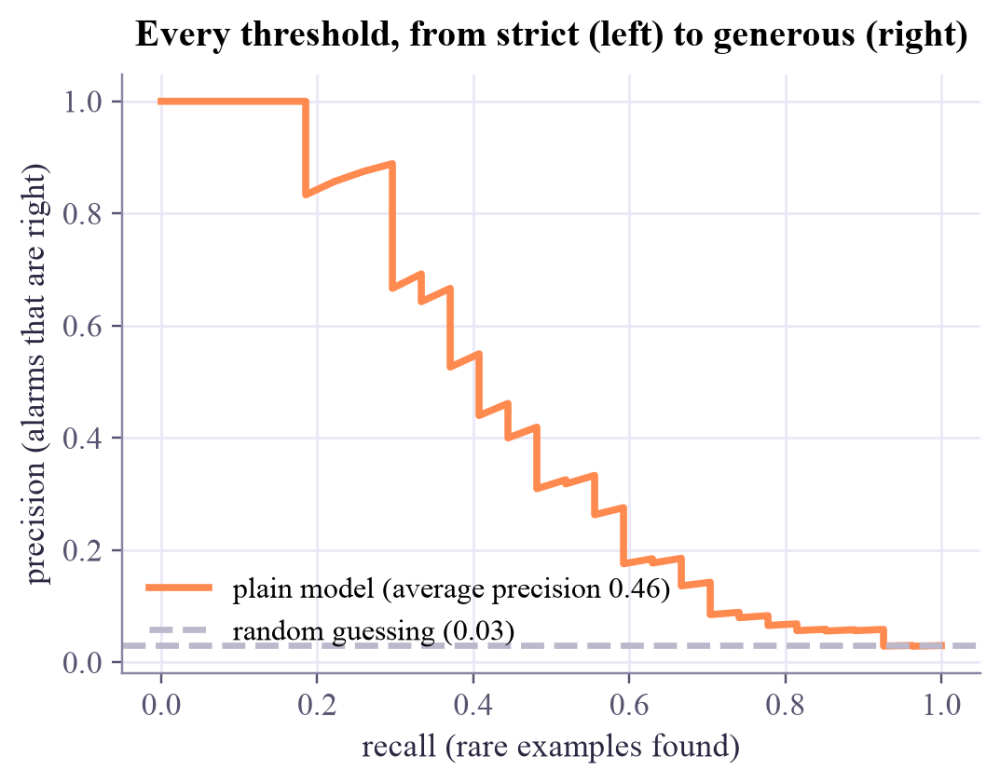

training set: 2100 examples, 63 rare (3.0%)
Machine Learning
 about 11 min
about 11 min ml-w3d3.ipynb
ml-w3d3.ipynb
When one class is rare
When 97% of the examples belong to one class, a model can win by ignoring the other. Here is how to make it pay attention, and how to judge whether it did.
In this lesson you will
- Explain why training on imbalanced data pushes a model to ignore the rare class
- Fix it with class weights, resampling or a different threshold
- Read the precision–recall trade-off, and choose according to what mistakes cost
Warm-up
1 minRare, and important

In week 1 you saw that accuracy can lie when one class is rare: a "model" that never finds the disease still scores 95%. Rare classes are often exactly the ones that matter: a fraud, a failing machine, a faulty qubit. Today: how to train a classifier that still finds them.
Big idea
4 minChange what you ask for
Training minimizes the average loss. With 97 common examples for every 3 rare ones, the common class dominates that average, and the cheapest way to make it small is to push the boundary into the rare class. The model isn't broken: it's doing exactly what we asked. So we change what we ask:
1. Class weights
Give each example a weight in the loss, larger for the rare class. With "balanced" weights , both classes count equally in total. scikit-learn: class_weight="balanced"; PyTorch: pos_weight or weight= in the loss.
2. Resampling
Repeat rare examples (oversampling), drop common ones (undersampling), or create new rare points between existing neighbors (SMOTE). Only on the training set: the test set must stay as the real world is.
3. Move the threshold. Keep the model, but call an example rare when instead of .
All three trade the same two things: recall (how many rare examples you find) against precision (how many of your alarms are right). The precision–recall curve shows the whole trade-off as the threshold moves, and its area (average precision) is a single score that focuses on the rare class.
There's no free lunch: finding more rare cases costs more false alarms. Which balance is right depends on what each kind of mistake costs.
Play
3 minMake the model look
Shrink the rare class's share and watch plain training give up on it. Then switch on class weights, or move the threshold yourself.
Try this
At 2%, plain training finds almost nothing, yet its accuracy is the highest. Switch on class weights: recall jumps, accuracy drops, precision drops. Now go back to plain and lower the threshold instead: can you reach a similar balance?
Code
2 minThe three fixes in code
The notebook for this lessonEvery code cell below, with what it printed, is in
ml-w3d3.ipynb. To change the code and run it yourself, open the notebook in Google Colab (free, in your browser) or download it for your own Jupyter.import numpy as np
import torch
from sklearn.datasets import make_classification
from sklearn.model_selection import train_test_split
from sklearn.linear_model import LogisticRegression
from sklearn.metrics import recall_score, precision_score, f1_score, balanced_accuracy_score, accuracy_score
torch.set_num_threads(1)
X, y = make_classification(n_samples=3000, n_features=2, n_informative=2, n_redundant=0, n_clusters_per_class=1,
weights=[0.97, 0.03], class_sep=0.9, flip_y=0, random_state=2)
X_tr, X_te, y_tr, y_te = train_test_split(X, y, test_size=0.3, stratify=y, random_state=0)
print(f"training set: {len(y_tr)} examples, {y_tr.sum()} rare ({y_tr.mean():.1%})")
def report(name, pred):
print(f"{name:>22}: accuracy {accuracy_score(y_te, pred):.3f} recall {recall_score(y_te, pred):.3f} "
f"precision {precision_score(y_te, pred, zero_division=0):.3f} F1 {f1_score(y_te, pred):.3f} "
f"balanced {balanced_accuracy_score(y_te, pred):.3f}")What it printed in the notebook
plain = LogisticRegression().fit(X_tr, y_tr)
weighted = LogisticRegression(class_weight="balanced").fit(X_tr, y_tr)
report("plain", plain.predict(X_te))
report("class weights", weighted.predict(X_te))What it printed in the notebook
plain: accuracy 0.976 recall 0.185 precision 1.000 F1 0.312 balanced 0.593
class weights: accuracy 0.810 recall 0.889 precision 0.125 F1 0.219 balanced 0.848Class weights lifted recall from 19% to 89% and balanced accuracy from 0.59 to 0.85, but precision fell to 12%: most alarms are now false. For screening a disease that's often the right trade; for a spam filter it would be terrible.
Xt = torch.tensor(X_tr, dtype=torch.float32)
yt = torch.tensor(y_tr, dtype=torch.float32).reshape(-1, 1)
pos_weight = torch.tensor([(y_tr == 0).sum() / (y_tr == 1).sum()]) # about 32: one rare example counts like 32 common ones
print(f"pos_weight = {pos_weight.item():.1f}")
torch.manual_seed(0)
model = torch.nn.Linear(2, 1)
loss_fn = torch.nn.BCEWithLogitsLoss(pos_weight=pos_weight)
optimizer = torch.optim.Adam(model.parameters(), lr=0.05)
for step in range(500):
optimizer.zero_grad()
loss_fn(model(Xt), yt).backward()
optimizer.step()
with torch.no_grad():
pred = (model(torch.tensor(X_te, dtype=torch.float32)) > 0).int().numpy().ravel()
report("PyTorch, pos_weight", pred)What it printed in the notebook
pos_weight = 32.3 PyTorch, pos_weight: accuracy 0.810 recall 0.889 precision 0.125 F1 0.219 balanced 0.848
import matplotlib.pyplot as plt
from sklearn.metrics import precision_recall_curve, average_precision_score
score = plain.predict_proba(X_te)[:, 1]
for t in [0.5, 0.3, 0.1]:
report(f"plain, threshold {t}", (score >= t).astype(int))
prec, rec, _ = precision_recall_curve(y_te, score)
plt.figure(figsize=(5.4, 3.8))
plt.plot(rec, prec, color="#ff8a50", lw=2.5, label=f"plain model (average precision {average_precision_score(y_te, score):.2f})")
plt.axhline(y_te.mean(), color="#bcb7cb", ls="--", label=f"random guessing ({y_te.mean():.2f})")
plt.xlabel("recall (rare examples found)")
plt.ylabel("precision (alarms that are right)")
plt.legend(loc="lower left")
plt.title("Every threshold, from strict (left) to generous (right)")
plt.show()What it printed in the notebook
plain, threshold 0.5: accuracy 0.976 recall 0.185 precision 1.000 F1 0.312 balanced 0.593 plain, threshold 0.3: accuracy 0.974 recall 0.333 precision 0.643 F1 0.439 balanced 0.664 plain, threshold 0.1: accuracy 0.953 recall 0.481 precision 0.317 F1 0.382 balanced 0.725

Your turn
2 minYour turn: oversample by hand
Make the classes equal in the training set by repeating randomly chosen rare examples, then train a plain logistic regression. How does it compare with class weights?
rng = np.random.default_rng(0)
rare_idx = np.flatnonzero(y_tr == 1)
common_idx = np.flatnonzero(y_tr == 0)
extra = np.array([], dtype=int) # TODO: rng.choice(rare_idx, size=..., replace=True) to make the classes equal
idx = np.concatenate([common_idx, rare_idx, extra])
over = LogisticRegression().fit(X_tr[idx], y_tr[idx])
print("rare share after resampling:", round(y_tr[idx].mean(), 3))
report("oversampled", over.predict(X_te))Need a hint?
You need len(common_idx) - len(rare_idx) extra rare rows: rng.choice(rare_idx, size=..., replace=True).
Show a solution
extra = rng.choice(rare_idx, size=len(common_idx) - len(rare_idx), replace=True)
idx = np.concatenate([common_idx, rare_idx, extra])
over = LogisticRegression().fit(X_tr[idx], y_tr[idx])
print("rare share after resampling:", round(y_tr[idx].mean(), 3))
report("oversampled", over.predict(X_te))
report("class weights", weighted.predict(X_te))
print("Duplicating rare examples has almost the same effect as weighting them: both make the rare class count more.")What it printed in the notebook
rare share after resampling: 0.5
oversampled: accuracy 0.809 recall 0.889 precision 0.124 F1 0.218 balanced 0.848
class weights: accuracy 0.810 recall 0.889 precision 0.125 F1 0.219 balanced 0.848
Duplicating rare examples has almost the same effect as weighting them: both make the rare class count more.Check yourself
2 minQuick check
Question 1 of 4
Why does a plain classifier trained on 2% positives often predict 'negative' for almost everything?
Question 2 of 4
What does
class_weight="balanced" do?Question 3 of 4
When should you oversample the rare class?
Question 4 of 4
You lower the decision threshold from 0.5 to 0.2. Usually…
Wrap-up
1 minToday in one sentence
Quantum link
This is one of Sara's research topics: benchmarking quantum classifiers on imbalanced data. The same fixes carry over: a quantum classifier can be trained with a class-weighted loss, and a quantum-kernel SVM accepts class weights just like a classical one. In the Quantum ML tutorial you'll compare quantum and classical models with exactly these scores.
Go deeper (optional)
He and Garcia, "Learning from imbalanced data" (IEEE Transactions on Knowledge and Data Engineering, 2009) is the classic survey. SMOTE comes from Chawla and coauthors (Journal of Artificial Intelligence Research, 2002).
Next in Machine Learning: a completely different kind of classifier, one that asks yes/no questions: decision trees.

That's the lesson!
Tap the button to save it. Short and steady wins.
Marked by mistake? Undo